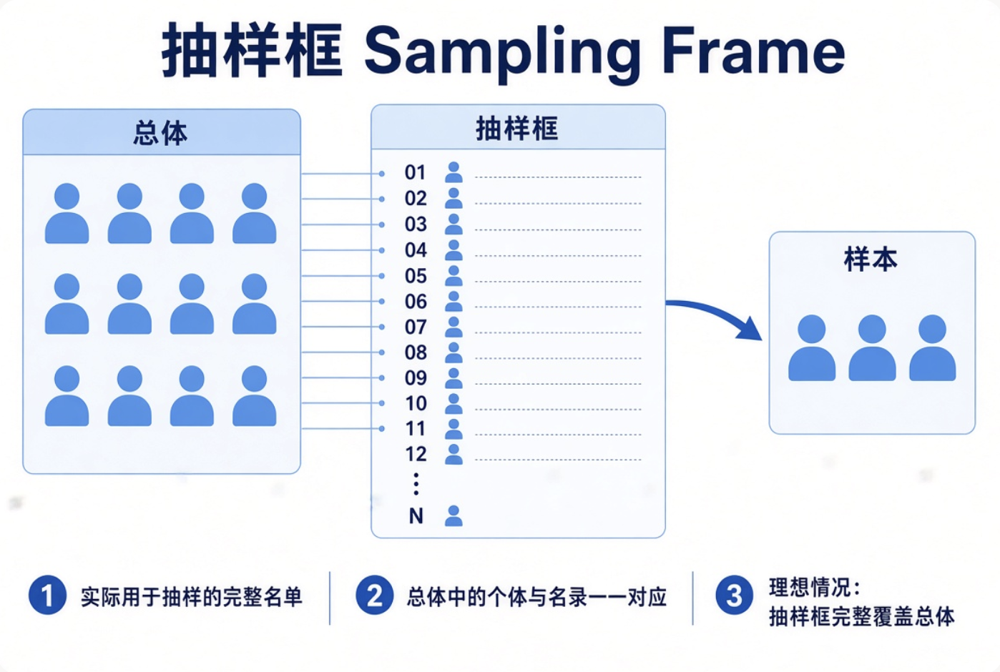
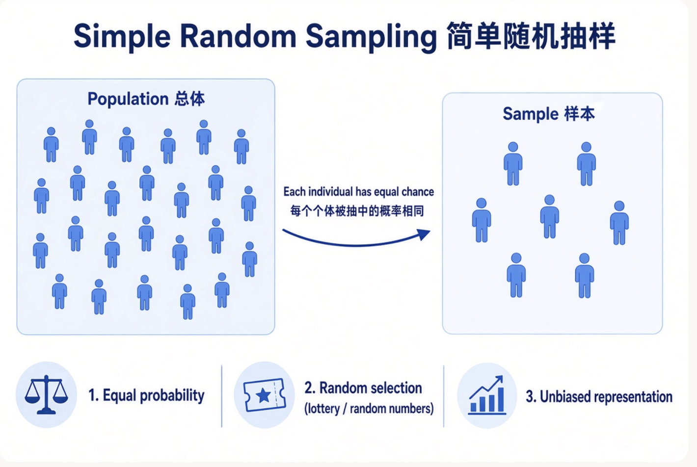
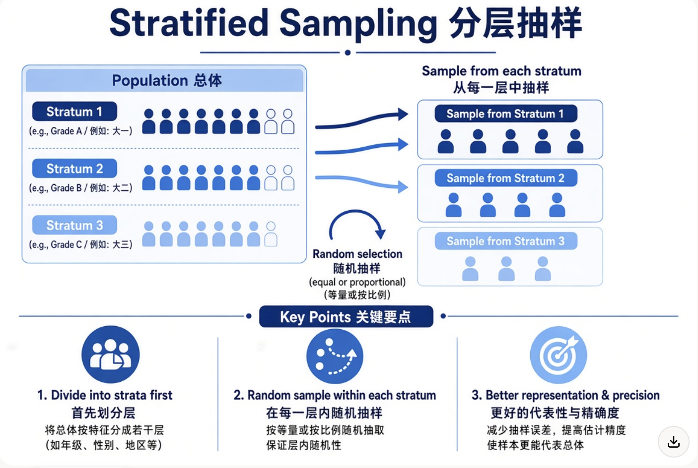
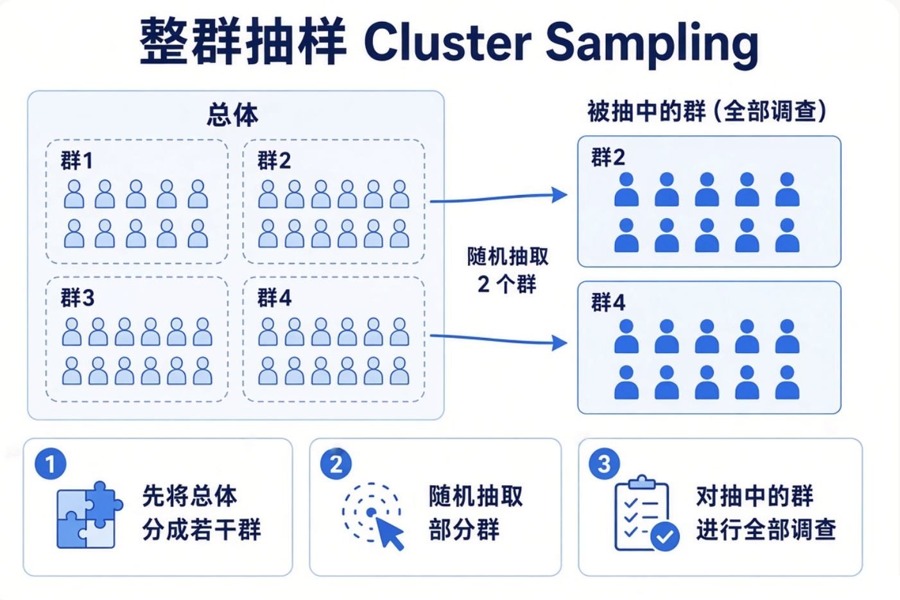
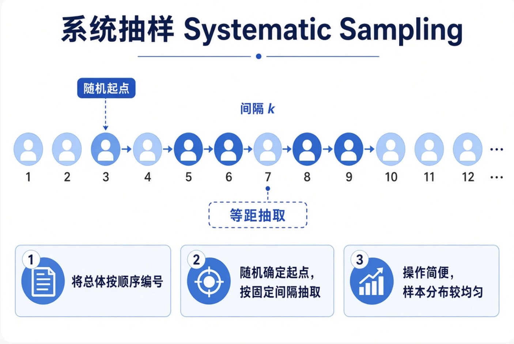
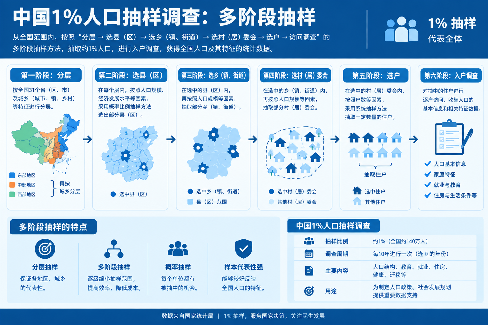
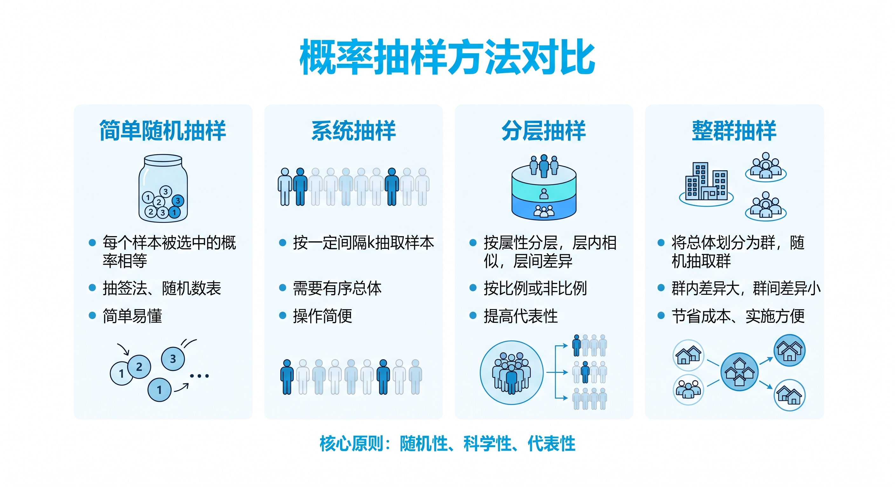

2026-09-11
国家统计局
http://www.stats.gov.cn/
中国政府网 / 各部门
http://www.gov.cn/
联合国统计司
http://data.un.org/
世界银行公开数据
https://data.worldbank.org
外交部 · 国防部 · 发展改革委 · 教育部
公安部 · 监察部 · 民政部 · 司法部
环境保护部 · 住房城乡建设部 · 交通运输部 · 水利部
卫生计生委 · 人民银行 · 审计署 · 国资委
质检总局 · 新闻出版广电总局 · 体育总局 · 安全监管总局
知识产权局 · 旅游局 · 宗教局 · 参事室
港澳办 · 法制办 · 国研室 · 台办
VPN或校园网访问
路径示例：图书馆主页 → 电子资源 → 中文数据库
不要通过百度等搜索引擎直接搜索数据库名称后访问（容易出现权限或安全问题）
主要内容包括：
覆盖：基本情况、综合经济、农业、工业、投资及消费、教育、卫生和社会保障等。
主要栏目：
可按以下维度检索：
支持统计年鉴、调查资料等多种类型。
调查环节：
总体（Population）
样本（Sample）
抽样框（Sampling frame）
概率抽样方法
定义：
我们想要研究的全部对象所构成的集合。
例子： - 想了解某大学所有在校本科生的平均每周学习时间
总体 = 该大学全部在校本科生
想研究全国高考考生的数学成绩分布
定义：
从总体中抽取的一部分个体，用来推断总体特征。
例子： - 从某大学 2 万名本科生中，随机抽取 500 人进行问卷调查
这 500 人就是样本
从全国高考考生中抽取 1 万人的成绩进行分析
核心思想：用样本的信息去估计总体的未知特征（如均值、比例等）。
总体中所有个体的名单或名录。

)简单随机抽样（Simple Random Sampling）
分层抽样（Stratified Sampling）
整群抽样（Cluster Sampling）
系统抽样（Systematic Sampling）
多阶段抽样（Multi-stage Sampling）
总体中每一个个体被抽中的概率完全相同，且抽取过程相互独立（或等概率无放回）。
优点：简单、统计理论性质好
缺点：需要完整抽样框；当总体很大时实施成本高

先将总体按照某个特征分成若干互不重叠的层（strata），再从每一层中独立进行随机抽样。
优点：
保证各层都有代表性
通常能提高估计精度
可对每层单独分析
适用情况：总体内部差异较大，且可按重要特征分层时。

先将总体分成若干群（clusters），然后随机抽取一部分群，对抽中的群进行全部调查。

例子： 想调查某市小学生的视力情况。
以“学校”为群，随机抽取 20 所小学，然后调查这 20 所小学的全部学生。
优点：实施方便、节省成本（尤其当个体分散时）
缺点：精度通常低于简单随机抽样（因为同一群内个体往往较相似）
将总体按一定顺序排列，先随机确定一个起点，然后按固定间隔抽取个体。

系统抽样
优点：操作简单、样本分布较均匀
缺点：如果总体中的个体排列有周期性，可能产生偏差
分多个阶段进行抽样，每个阶段使用不同的抽样单位。


由随机抽样引起
可以计算和控制
样本越大，抽样误差通常越小
抽样框
概率抽样
简单随机抽样simple random sampling
分层抽样 stratified sampling
整群抽样 cluster sampling
系统抽样 systematic sampling
多阶段抽样 multi-stage sampling
抽样误差与非抽样误差
STAT | © 2026, Li Zongzhang